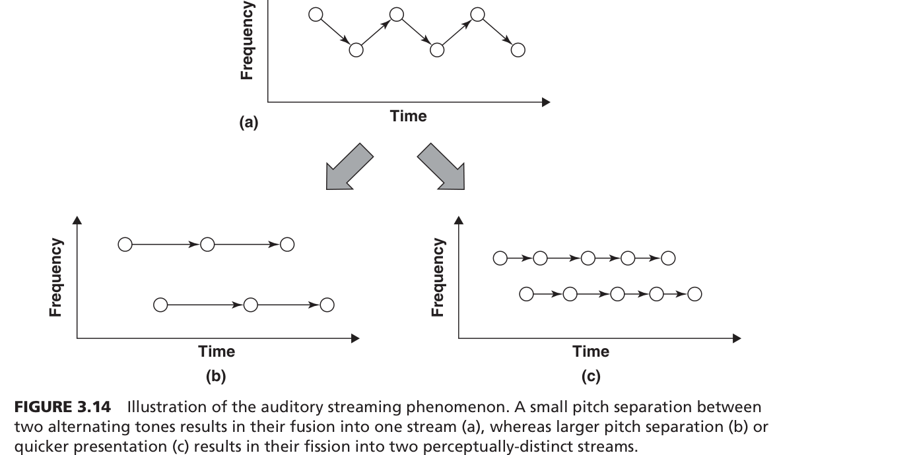

개방형 사무실에 신입사원이 첫 출근합니다. 옆자리 동료의 전화 통화, 뒤쪽 회의 소리, 프린터 소음이 동시에 쏟아집니다. 눈은 감을 수 있지만, 귀는 닫을 수 없습니다.
그런데 이 소음 속에서도 누군가 자기 이름을 부르면 바로 알아챕니다. 반면, 음악을 들으면서 일하면 기분은 좋은데 실수가 늘어납니다. 왜 귀는 이렇게 모순적일까요?
지금부터 이 신입사원의 하루를 따라가며, 귀가 어떻게 소리를 골라듣고, 왜 소음에 무너지고, 어떤 설계가 도움이 되는지 알아보겠습니다.
"여러분 개방형 사무실에서 일해보신 적 있으세요? 카페에서 공부해본 적은요? 옆 테이블 대화가 신경 쓰이는데, 이상하게 누가 내 이름을 말하면 바로 들립니다. 오늘은 이 모순을 풀어보겠습니다."
"먼저, 귀가 눈과 근본적으로 다른 점 세 가지부터 알아보겠습니다."

- Omnidirectional (전방위성) = 모든 방향에서 수신. 눈은 앞만 보지만 귀는 360° 다 들음. 사무실에서 뒤에서 하는 대화도 들리는 이유.
- Always-on (상시 수신) = 잠잘 때도 꺼지지 않음. "귀 깜빡임(Earblink)"이 없음. 눈 감아도 소리는 계속 들어옴.
- Transient (일회성/순간성) = 소리는 즉시 사라짐. 글자처럼 남아있지 않아서 놓치면 끝.
왼쪽 시각 3개 아이콘(눈 스캐닝, 깜빡임, 지속) → "시각은 이렇게 통제할 수 있습니다." 오른쪽 귀 3개 특성 → "청각은 세 가지 모두 반대입니다."
"신입사원이 사무실에 앉으면, 눈은 모니터만 보면 되지만 귀는 다릅니다. 뒤에서 하는 대화, 옆에서 울리는 전화, 위에서 나오는 에어컨 소리 — 전부 다 들립니다. 눈은 감을 수 있지만 귀는 닫을 수 없어요. 그리고 방금 한 말은 사라집니다. 이 세 가지가 청각의 근본적인 특성입니다."
귀가 닫을 수 없다면, 여러 소리가 동시에 들어올 때 어떻게 되나?

- Clutter (혼란 상태) = 여러 소리가 뒤섞여서 구분 불가능한 상태. 개방형 사무실에서 여러 명이 동시에 말할 때.
- 주파수 분리 = 음높이(Pitch)가 다른 소리는 구분 가능. 남성 목소리(저주파)와 여성 목소리(고주파)는 섞여도 분리됨.
왼쪽 혼란 상태(빨간 파형 충돌) → "이게 개방형 사무실의 현실입니다." 오른쪽 주파수 분리(파란+남색 파형 분리) → "하지만 주파수가 다르면 뇌가 분리할 수 있습니다."
"사무실에서 3명이 동시에 말하면 인지 과부하가 옵니다. 모든 소리에 동시에 집중하는 건 불가능해요. 그런데 한 가지 탈출구가 있어요 — 주파수 분리입니다. 남성 팀장과 여성 동료가 동시에 말해도, 음높이가 다르니까 뇌가 두 개의 흐름으로 분리합니다."
주의를 기울이지 않은 소리는 그냥 사라지나? 아니면 어딘가에 남아있나?

- 전주의적 단기 청각 저장소 (Buffer) = 주의를 안 기울여도 3~6초간 소리가 임시 보관되는 곳. 시각에는 없는 청각만의 특성.
- 사후 인지 = "뭐라고?" 하면서 돌아보는 순간, 저장소에 남은 마지막 내용을 끄집어내는 것.
흐름도: 무주의 채널 → 버퍼(3-6초 유지) → 의미 분석 → 장기 기억. 핵심: 주의를 안 기울여도 "의미 수준까지" 처리됨(무의미한 덩어리가 아님). 이것이 칵테일 파티 효과의 기반.
스톱워치(3-6초) 가리키며 → "이 버퍼가 핵심입니다." 아래쪽 화살표(주의 전환 시 사후 인지) → "돌아보면 마지막 내용이 아직 남아있어요." 윗쪽 "무의미한 덩어리가 아님" 태그 → "의미까지 처리됩니다."
"사무실에서 일하다가 동료가 뭐라고 했는데, '어?' 하면서 돌아보면 방금 한 말이 머릿속에 떠오르죠? 이게 단기 청각 저장소 덕분입니다. 3~6초 동안 임시로 저장돼 있거든요. 시각에는 이런 게 없어요. 눈은 안 보면 끝인데, 귀는 안 들으려 해도 3~6초간 보관합니다."
귀가 이렇게 항상 열려있고 버퍼까지 있다면, 중요한 소리로 주의를 끄는 최적의 방법은 뭘까?

- Attensors (어텐서) = 주의를 끌기 위해 최적화된 청각 경고 신호. 큰 소리가 아닌 "낮은 역치"를 활용한 설계.
- Low Threshold (낮은 역치) = 자기 이름처럼 작은 소리로도 즉각 주의가 전환되는 것. 볼륨이 아니라 의미가 핵심.
X축 = 볼륨, Y축 = 주의력. 실선(곡선) = 볼륨 높이면 주의는 올라가지만 금방 포화. 점선 = 볼륨에 비례해서 스트레스도 올라감. 핵심: 곡선 왼쪽 위에 "낮은 역치 어텐서" 포인트 — 작은 소리로도 주의를 확 끌 수 있는 최적점.
그래프 왼쪽 상단의 어텐서 포인트 가리키며 → "여기가 핵심입니다. 작은 소리로도 주의를 끄는 최적점." 오른쪽 "과도한 볼륨 경고의 한계" → "크게 울리면 주의는 끌지만 스트레스로 수행이 떨어집니다."
"사무실에서 화재 경보가 울리면 다 듣지만, 스트레스도 급등합니다. 반면 동료가 조용히 내 이름을 부르면? 작은 소리인데도 바로 돌아봅니다. 볼륨이 아니라 '의미적 관련성'이 주의를 끄는 거예요. 이걸 활용한 게 어텐서 설계입니다."
낮은 역치로 주의를 끈다면, 소음 속에서 특정 소리만 골라듣는 건 어떻게 가능한가?

- Auditory Object (청각적 객체) = 음높이, 음량, 음색 등을 가진 하나의 통합된 소리 덩어리. 동료의 목소리 = 하나의 객체.
- Parallel Processing (병렬 처리) = 여러 청각 객체의 차원을 동시에 처리하는 능력.
- Earcons (이어콘) = 차원의 병렬 처리를 활용한 청각 아이콘. 짧고 독특한 소리로 긴급성을 전달.
- Cocktail Party Effect = 시끄러운 파티에서도 대화 상대의 목소리만 골라들을 수 있는 능력.
돋보기 안의 파란 파형(선택된 화자) 가리키며 → "뇌가 이 하나의 목소리만 확대합니다." 배경 회색 파형 → "나머지는 배경으로 밀려납니다." 하단 4개 박스 순서대로 → "청각 객체, 병렬 처리, 이어콘, 칵테일 파티 — 이 네 개가 연결됩니다."
"회식 자리에서 10명이 동시에 말해도, 여러분은 옆 사람 말만 골라들을 수 있죠? 이게 칵테일 파티 효과입니다. 뇌가 음높이, 음색, 위치를 조합해서 '하나의 청각 객체'를 만들고, 그것만 확대하는 겁니다. 이 원리를 응용한 게 이어콘 — 짧은 알림음으로 긴급성을 전달하는 설계입니다."
칵테일 파티 효과가 어떻게 작동하는지, 그 물리적 원리를 더 깊이 파보겠습니다.


- Auditory Streaming = 여러 소리를 물리적 특성(주파수, 속도)에 따라 별개의 흐름으로 조직화하는 현상.
- Fusion (융합) = 주파수 차이가 작으면 하나의 스트림으로 합쳐짐. (a) 그래프.
- Fission (분열) = 주파수 차이가 크면 두 개의 스트림으로 분리됨. (b) 그래프. 사무실에서 남녀 목소리가 분리되는 원리.
(a) 주파수 차이 최소 → 한 줄기(fusion). (b) 주파수 차이 확대 → 두 줄기로 분열(fission). (c) 제시 속도 증가 → 물리적으로 같아도 빠르면 강제 분할. 교재 FIGURE 3.14도 같은 원리: 원 간격이 넓으면 두 줄기로 지각됨.
"사무실에서 두 명이 동시에 말할 때, 남녀면 구분되고 같은 성별이면 안 되는 이유가 여기 있어요. 주파수 차이가 크면 뇌가 두 개의 스트림으로 '분열'시킵니다. 재밌는 건, 빠르게 말하면 주파수가 같아도 강제로 분리된다는 거예요."
주파수로 분리된다면, 물리적으로 소리가 오는 방향도 도움이 될까?

- Monaural (모노 청취) = 두 귀에 같은 소리. 정면에서 두 명이 동시에 말하는 상황. 필터링 매우 어려움.
- Dichotic (양이 청취) = 좌우 귀에 다른 소리. 한쪽에서 팀장, 다른 쪽에서 동료. 공간 분리로 필터링 쉬움.
왼쪽 모노 그림(두 화자 → 하나의 머리에 합쳐짐) → "정면 동시 발화 = 필터링 실패." 오른쪽 양이 그림(좌우 분리) → "공간적으로 분리되면 스트림이 형성되어 필터링 성공."
"사무실 회의에서 정면에 앉은 두 명이 동시에 말하면 뒤섞입니다. 이게 모노입니다. 하지만 한 명이 왼쪽, 한 명이 오른쪽에 있으면? 좌우 귀가 다른 소리를 받아서 분리가 쉬워져요. 이게 양이 청취, 공간 분리의 힘입니다."
자연적 공간 분리가 있다면, 기술로 인위적으로 3D 공간을 만들면 더 좋아지지 않을까?

- 3D 오디오 / Spatial Audio = 스테레오 헤드폰으로 360° 공간에 소리를 배치하는 기술. 조종석에서 엔진 경고가 "왼쪽 뒤"에서 들리게.
- 이동형 경고 궤적 = 경고음이 좌→우로 이동하며 제시. 주의 산만 최소화.
360° 구체 그림에서 "엔진 고장 경고(좌측 후방)" 가리키며 → "실제 고장 위치에서 소리가 납니다." "관제탑(정면)" → "시각적으로 안 보이는 뒤쪽도 소리로 방향을 알려줍니다." 오른쪽 "주의 전환의 즉각성" → "청각은 시각과 달리 거리에 상관없이 즉각 전환됩니다."
"사무실에 3D 오디오를 적용하면 어떻게 될까요? 팀장 알림은 왼쪽에서, 메일 알림은 오른쪽에서, 긴급 경고는 위에서 들립니다. 눈을 돌리지 않아도 '어디서 온 정보인지' 즉각 알 수 있어요. 시각적 주의(IAE)와 달리, 청각적 주의 전환은 거리와 무관하게 즉각적입니다."
청각이 이렇게 강력하다면, 시각과 합쳐지면 어떻게 되나?

- Sensory Integration = 시각+청각+촉각이 하나로 통합되는 프로세스. 뇌가 동일 공간 지점의 감각을 합침.
- Redundant Coding (중복 코딩) = 같은 정보를 여러 감각으로 동시 전달. 경고를 소리+빨간 불+진동으로 동시에.
- Obligatory (의무적 연결) = 소리가 나면 자동으로 그쪽을 보게 됨. 의식적 통제 불가. 자석 효과.
중앙 구체(Common Spatial Point) 가리키며 → "시각, 청각, 촉각이 같은 공간 지점에서 만나면 통합됩니다." 빨간 화살표(의무적 강제 견인) → "소리가 시선을 강제로 끌어갑니다 — 의지와 무관합니다."
"사무실에서 누가 '팀장님!' 하고 부르면, 팀장은 의지와 상관없이 고개를 돌립니다. 이게 의무적 연결이에요. 청각 경고가 시각적 주의를 강제로 끌어가는 자석 효과입니다. 그래서 중요한 경고를 설계할 때, 소리+화면+진동을 동시에 쓰면 놓칠 확률이 비약적으로 줄어듭니다."
"교차 양상 통합의 신경과학적 메커니즘에 대해 교수님께서 보충해주실 겁니다."
귀의 필터링 능력과 기술을 배웠는데, 그렇다면 왜 사무실 소음은 여전히 문제인가? 필터링이 안 되는 소리가 있나?

- ISE (Irrelevant Sound Effect) = 무관한 배경 소음이 인지 수행을 최대 60%까지 파괴하는 현상. 무시하려 해도 안 됨.
- 순서 유지(Maintenance of Order) = 전화번호 외우기, 암산 같은 순서가 중요한 작업. ISE에 가장 취약.
왼쪽 작업 기억 블록 1-2-3-4-5(순서 유지) → 오른쪽에서 빨간 파형(무관한 외부 소음)이 충돌 → 블록이 깨짐. "60% 파괴"가 핵심 수치.
왼쪽 "주의 포착의 양날의 검" → "귀가 항상 열려있는 특성(Act 1)이 여기서 독이 됩니다." 블록이 깨지는 이미지 → "순서 기억이 가장 심하게 타격받습니다." "60%" 수치 강조.
"Act 1에서 귀는 닫을 수 없다고 했죠? 여기서 그게 독이 됩니다. 신입사원이 전화번호를 외우는데, 옆에서 동료가 전화하면 — 무시하려 해도 안 됩니다. 수행 능력이 최대 60%까지 떨어져요. 이게 무관음 효과입니다. 특히 순서를 기억해야 하는 작업에 치명적이에요."
60%나 파괴된다면, 소리의 어떤 특성이 이렇게 강한 방해를 만드나?

- Acoustic Variation (음향적 변동성) = 소리의 음높이, 크기, 리듬이 변하는 정도. 핵심: 볼륨이 아니라 변동성이 방해의 원인.
- Disruption (끊김) = 변동성 높은 소음(말소리)이 순차적 정보 처리 파이프라인을 물리적으로 끊는 현상.
위쪽(평탄한 배경음 → 매끄러운 파이프라인) → "에어컨, 선풍기는 괜찮습니다." 아래쪽(변동 심한 발화 → 파이프라인 끊김) → "사람 말소리가 최악입니다." Insight 1 → "볼륨이 아니라 변동성이 핵심." Insight 3 → "무시하려 해도 근본적으로 불가."
"에어컨 소리는 오래 들어도 괜찮은데, 동료 대화는 30초만 들어도 집중이 깨지죠? 볼륨은 비슷한데 왜 다를까요? 핵심은 '변동성'입니다. 에어컨은 항상 같은 소리(변동성 낮음), 대화는 음높이와 리듬이 계속 변합니다(변동성 극심). 이 변화가 뇌의 정보 처리 파이프라인을 물리적으로 끊습니다."
그러면 오래 일하다 보면 소음에 적응(습관화)되지 않을까?

- Habituation (습관화) = "익숙해지면 괜찮아질 거야"라는 믿음. 실제로는 소음의 파괴력은 감소하지 않음.
- Dishabituation (탈습관화) = 미세한 습관화가 생겨도, 짧은 침묵 후 소음이 재개되면 파괴력이 완전히 리셋되는 현상.
사무실 평면도에서 빨간 방사형(소음 전파) 가리키며 → "개방형 사무실의 소음은 전방위로 퍼집니다." 오른쪽 "적응의 환상 타파" 박스 → "핵심 메시지입니다. 적응은 일어나지 않아요." 세 번째 글머리 → "탈습관화 = 리셋."
"'나는 소음에 익숙해졌어'라고 말하는 사람 많죠? 연구 결과, 그건 환상입니다. 개방형 사무실에서 작업 수행 손실은 개인 사무실 대비 2배예요. 더 문제는 탈습관화입니다. 점심시간에 잠깐 조용했다가 오후에 다시 시끄러워지면? 파괴력이 완전히 리셋돼요. 매일 처음부터 다시 당하는 겁니다."
적응이 안 된다면, 공학적으로 소음을 줄이는 방법은 뭐가 있나?

- White Noise Masking = 지속적 백색 소음으로 배경 발화를 물리적으로 덮어씌우는 방법. 변동성 있는 말소리를 균일한 소음으로 마스킹.
- Sound-absorbing (흡음재) = 천장/칸막이에 다공성 소재를 설치하여 잔향 시간을 줄이고 말소리 명료도를 떨어뜨리는 방법.
파란 마스킹 바 가리키며 → "백색 소음이 배경 발화를 덮어씌웁니다." 흡음 패널 → "천장에 이걸 설치하면 말소리가 퍼지지 않아요." 왼쪽 "설계 목표" 박스 → "핵심: 데시벨이 아니라 변동성 축소가 목표."
"해결책은 두 가지입니다. 첫째, 백색 소음 — '쉬이이이' 하는 균일한 소리를 깔면, 동료 대화가 물리적으로 묻힙니다. 변동성이 사라지니까요. 둘째, 흡음재 — 천장에 소리를 흡수하는 패널을 달면 대화가 멀리 퍼지지 않습니다. 핵심은 볼륨을 줄이는 게 아니라 '변동성'을 줄이는 겁니다."
백색 소음 대신 음악을 들으면 안 될까? 사람들은 백색 소음보다 음악을 선호하는데...

- 인간 공학적 모순 = 음악 청취 시 만족도/선호도는 올라가는데, 순서 유지 작업의 인지 수행은 떨어지는 현상. 사용자가 해로운 환경을 오히려 선호.
- 순서 의존도 분석 = 음악의 방해 정도는 작업 종류에 따라 다름. 순서 중요한 작업(코딩, 암산) = 방해됨. 읽기 이해 = 방해 안 됨.
X축 = 음악 청취 활성화, Y축(파랑↗) = 선호도/만족도 상승, Y축(빨강↘) = 인지 수행 하락. 빨간 원(교차점) = 인간 공학적 모순점. 이 교차점이 설계자의 딜레마.
빨간 교차점 가리키며 → "여기가 모순점입니다. 기분은 좋아지는데 실수는 늘어납니다." 오른쪽 "작업 성격에 따른 분석" → "순서가 필요한 코딩 = 음악 금지, 단순 읽기 = 음악 괜찮음."
"사무실에서 이어폰 끼고 음악 듣는 분 많죠? 만족도는 올라갑니다. 하지만 코딩이나 계산처럼 순서가 중요한 작업에서는 실수가 늘어요. 이게 인간 공학적 모순입니다 — 해로운 환경을 사용자가 오히려 선호하는 거예요. 그래서 음향 설계 전에 '이 업무가 순서 의존적인가?'를 먼저 분석해야 합니다."
결국 사무실 음향 설계의 최종 난제는 뭘까?

- 소음 프라이버시 = 배경 소음을 차단하여 개인의 인지 집중을 보호하는 것. 마스킹+흡음재.
- 음성 명료도 (Speech Intelligibility) = 동료 간 의사소통 시 명확하게 들리는 환경. 소리가 잘 전달되어야 함.
- Competing Goals = 두 목표의 완벽한 동시 충족은 물리적으로 불가능. 타협과 절충이 필수.
저울 왼쪽(소음 프라이버시/칸막이) → "소음을 차단하면 집중은 좋지만..." 저울 오른쪽(음성 명료도/협업 공간) → "동료와 대화가 안 됩니다." 아래 박스 → "'완벽한 차단'과 '완벽한 전달'은 공존 불가, 설계자는 반드시 타협해야 합니다."
"결국 사무실 음향 설계의 궁극적 딜레마입니다. 소음을 완벽히 차단하면 집중은 좋지만 동료와 대화가 안 됩니다. 소리를 잘 전달하면 소통은 좋지만 집중이 깨져요. 이 두 목표의 '완벽한 동시 충족'은 물리적으로 불가능합니다. 설계자는 시스템의 목적에 따라 타협점을 찾아야 합니다."
처음에 던진 질문으로 돌아가 봅시다.
처음에 개방형 사무실 신입사원이 소음 속에서도 자기 이름은 바로 알아채지만, 음악을 들으며 일하면 실수가 늘어난다고 했습니다. 왜 귀가 이렇게 모순적인지 이제 답할 수 있습니다.
- Act 1: 귀는 360° 상시 수신 안테나라 닫을 수 없지만, 칵테일 파티 효과로 특정 소리를 골라들을 수 있습니다. 이름처럼 의미적 관련성이 높은 소리는 낮은 역치로 즉각 주의를 끕니다.
- Act 2: 뇌는 주파수 분리(스트리밍)와 공간 분리(3D 오디오)로 소리를 필터링하고, 시각+청각의 교차 양상 통합으로 정보를 중복 코딩합니다.
- Act 3: 하지만 무관음 효과는 필터링 불가능하고 수행을 60% 파괴합니다. 핵심 원인은 볼륨이 아니라 변동성이며, 적응(습관화)도 환상입니다. 음악은 기분만 좋게 할 뿐이고, 프라이버시와 명료도는 영원한 딜레마입니다.
결국 좋은 사무실 음향 설계는 '변동성 통제(백색 소음+흡음재)' + '작업 분석(순서 의존도)' + '목적에 맞는 타협'의 조합입니다.
"처음에 신입사원이 왜 소음 속에서 이름은 듣고, 음악 들으면 실수하냐고 물었습니다. Act 1에서 — 귀는 닫을 수 없지만 칵테일 파티 효과로 골라들을 수 있다는 것, Act 2에서 — 주파수와 공간으로 분리하고 시각과 통합된다는 것, Act 3에서 — 그럼에도 무관음 효과는 막을 수 없고, 핵심은 볼륨이 아니라 변동성이라는 것을 배웠습니다. 사무실 설계의 답은 '완벽한 차단'이 아니라 '영리한 타협'입니다."